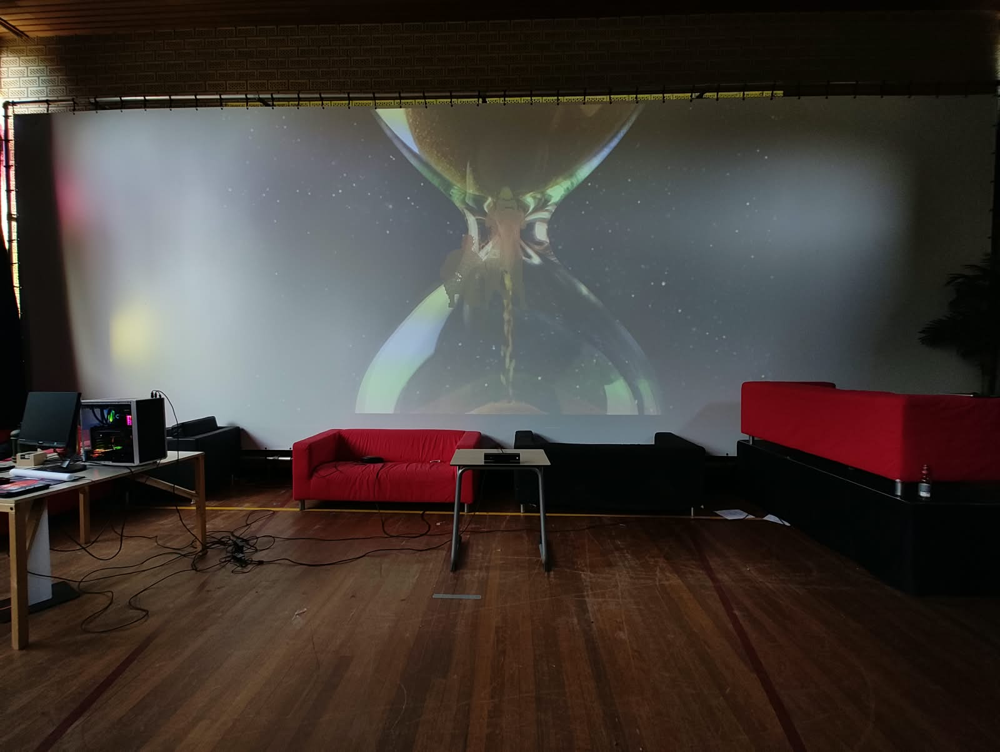

massimiliano

TDA Fase B is the second phase of The Memory of the Mirror, an interactive installation built in TouchDesigner with a Kinect. After the first prototype, I talked it through with my teacher and decided to give Fase A a second life as a reworked scene, and to build a completely new scene next to it. Together they make up Fase B.
Fase A asked how a delayed shadow affects body awareness. Fase B starts from a new question: why does time seem to go faster as we get older? Research on time perception (Droit-Volet, 2021; Grondin, 2020) points to attention, emotion and routine. New experiences make a moment feel long, routine makes it fly by. So time does not speed up, our experience of it changes.
The new scene makes that idea visible. The Kinect picks up a visitor's silhouette and fills it with small grains of sand, like an hourglass, that drift towards the centre of the screen. The longer someone stays in front of the camera, the more grains collect, as a picture of experience building up. The blob tracking behind this only partly worked in the end. I built and tested everything in TouchDesigner, scouted the expo location at Brusselseweg 150 at ZUYD University of Applied Sciences in Maastricht, tested with a projector, and ran the final setup on a more powerful desktop PC for the expo on 1 July 2025.
After the first live test I set two research goals: overcome the technical hurdles, and communicate my artistic intention more clearly. Where I first focused on getting the technology to work, I now took a step back to find out how to get the concept across.
The aim is an installation that is technically robust and makes the poetry of delayed time felt. Visitors should not ask what it is supposed to be, but be caught straight away by the wonder of their own shadow following them from the past. It is a balance between technical precision and artistic expressiveness, and that tension is what makes the research worthwhile.
Fase A is built on the idea that time is not only linear, it also leaves traces. It started with a walk under a tree, where my shadow seemed to follow me with a slight delay, a natural version of illusory palinopsia, the effect where people keep seeing images from the past. The installation turns that into a poetic encounter with time: visitors move in front of a Kinect and see their silhouette respond like an echo of themselves.
The first test at Museumnacht Maastricht showed that technology alone was not enough. Most adults saw an unclear shape, while children understood it right away and played with the trails. For the reworked version I focused on a clearer visual language: the Kinect V2 player index separates people from the background, and each figure gets a colour based on depth, blue for people close by and red for people further away. A slow, space-like background adds a reminder to stay in the present instead of looking back.
